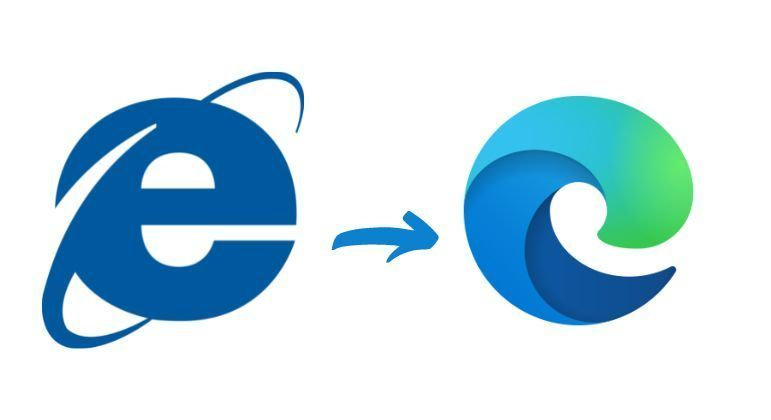
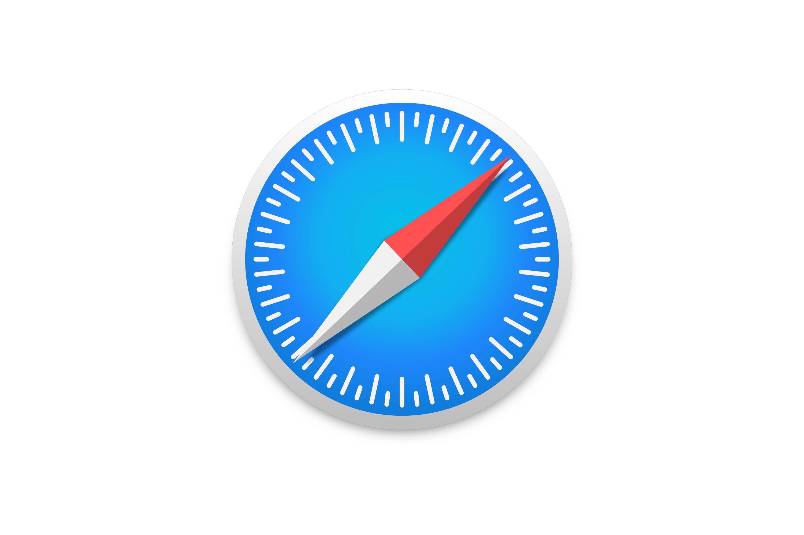

Contexto histórico
O termo “guerra dos navegadores” refere-se à competição pelo domínio do mercado de web browsers, desde a competição que levou o Internet Explorer a substituir o Netscape Navigator até a erosão do Internet Explorer, que desde 2003 compartilha o mercado com vários browsers emergentes, tais como Mozilla Firefox, Google Chrome, Safari e Opera Neste período a Microsoft foi processada pela Netscape alegando que a sua concorrente estaria utilizando táticas monopolistas para ganhar o mercado de browsers, já que a mesma, segundo a Netscape, se aproveitou de sua liderança no mercado de sistemas operacionais (Windows 95, Windows 98) e adicionou juntamente ao Windows o Internet Explorer. Dessa forma os usuários, pela praticidade, iriam automaticamente utilizar este ao invés de fazer o download do Netscape.
Quem foram os envolvidos e Quando e porque começou
Era evidente que no início dos anos 1990, toda empresa que almejasse destaque no seguimento de alta tecnologia deveria estar preparada para enfrentar a gigante do setor, a Microsoft.Esta companhia criada por Bill Gates e Paul Allen, em 1975, praticamente detinha o monopólio em Sistemas Operacionais e possuía capacidade instalada para adentrar em qualquer segmento de forma avassaladora.Mesmo assim, Gates hesitava quanto ao futuro da Web, tanto que demorou a determinar mudanças nos rumos da empresa. Alguns funcionários já conheciam a Netscape, recém-chegada no Vale do Silício. Thomas Reardon, à época um jovem programador da Microsoft relata que Quando em 1994 foi lançado o Netscape Navigator, a guerra estava declarada, sobretudo pelo destaque assustador daquele software. Sam Jadallah, que chegou a ser Vice-Presidente da Microsoft afirma que O que a Microsoft temia era que o navegador pudesse no futuro rodar de maneira autônoma ao Sistema Operacional, seu principal produto. Foi então que Bill Gates percebeu que o poder de mercado da Microsoft estava ameaçado. No dia 26 de maio de 1995, o CEO da Microsoft enviou um memorando aos funcionários da empresa, intitulado “The Internet Tidal Wave”. A mensagem era clara: destruam esse concorrente! Eis, o início da Guerra dos Navegadores!
Quais foram os desdobramentos e o que se seguiu a partir dela
A Microsoft venceu esta disputa ao lançar o Internet Explorer 4. Mas, o fim da guerra no mercado marca o início da disputa nos tribunais. Inicia-se o Caso Usa v. Microsoft com a demanda iniciada pelo advogado da Netscape, Gary Reback. A Microsoft foi acusada por práticas predatórias como o monopólio do Sistema Operacional, a venda casada do Internet Explorer com o Windows 95 e a fixação de contratos de exclusividade com fornecedores de computadores.Bill Gates se viu encurralado nos depoimentos filmados e que mostraram claramente seu posicionamento ambíguo. Em determinado momento do depoimento, Gates afirma que não sabia da reunião na sede da Netscape e que não sabia o que a Netscape fazia à época. Todavia, a Justiça teve acesso ao memorando enviado aos funcionários em maio de 1995 e provou que Gates arquitetou a guerra do começo ao fim. Outrossim, em junho de 2000, o juiz federal encarregado do caso Microsoft Thomaz Penfield Jackson decidi pela divisão da empresa, fazendo com que as ações da Microsoft declinem U$ 30 bilhões. Mesmo assim, uma corte de apelação garantiu que a decisão fosse invalidada na justiça e a Microsoft apenas pagou uma multa na forma de hardware e software para escolas pobres dos EUA, na casa dos U$ 1,5 bilhão. Gates se afasta do cargo de CEO e debilitado deixa a Microsoft para se dedicar à filantropia.Atualmente, o Internet Explorer não só não detém o monopólio do mercado de navegadores como vê sua fatia cair ano após ano.
Google Chrome
o Google Chrome é um dos navegadores mais usados da internet, isso inclui tanto sua versão desktop quanto a mobile. Afinal, ele traz uma grande vantagem: sincronização entre esses dispositivos de maneira que você consiga acessar seu histórico de navegação, independentemente do dispositivo que estiver usando. Além disso, o Chrome traz a melhor experiência para usar outros serviços do Google, como: Gmail, Google Drive, Google Calendar, Google Maps, entre outros.
Opera
O Opera foi um dos primeiros navegadores lançados para smartphones e foi evoluindo a cada atualização, ganhando assim uma interface agradável e simples de usar durante a navegação em dispositivos móveis. Sua leveza também é um ponto de destaque. Como ele tem a funcionalidade de comprimir as páginas, isso faz com que o navegador economize dados nos dispositivos móveis, tornando a navegação muito mais fluída. Há uma versão dele ainda mais eficaz no que diz respeito à compressão de dados: o Opera Mini. Outro recurso que melhora essa performance é o Turbo Opera, que aumenta a velocidade de conexão, o que facilita muito a vida dos usuários que precisam acessar a internet, mas contam com uma conexão baixa em seus celulares. Como seu foco é a otimização do desempenho na navegação, a quantidade de plugins que executam funções específicas no navegador é menor em comparação ao Chrome.
Mozilla Firefox
O Mozilla Firefox é um dos navegadores mais populares, além de ser considerado um dos mais fortes concorrentes do Google Chrome e do Microsoft Edge (a versão recente do Internet Explorer). Ele conta com funções bem interessantes para a experiência de quem o utiliza, tal como o bloqueio de vídeos com reprodução automática e extensões que atribuem diversas funcionalidades ao navegador.
Tor Browser
Outro navegador que pode ser muito útil para quem quer segurança e tranquilidade ao navegar na internet é o Tor Browser. Ele oferece recursos que vão permitir trafegar sem que fiquem rastros. Isso acontece pela tecnologia que o software utiliza. Ela conta com criptografia e bloqueadores de anúncios.
Microsoft Edge
Os navegadores da Microsoft podem causar certa desconfiança do público. Porém, o Edge conta com algumas características interessantes, as quais valem a pena serem destacadas. Por exemplo, ele é apontado como um dos navegadores mais rápidos do mercado. Assim, caso precise de agilidade, essa opção é interessante. Além disso, o consumo de espaço na memória é outro ponto forte. Assim como o Safari, também conta com recursos que vão oferecer uma experiência incrível na hora de assistir suas séries, como suporte para vídeos em 4K e áudio Dolby Digital. Seus pontos fracos, para alguns usuários, podem ser a usabilidade e a desconfiança, dado o histórico de outros navegadores da Microsoft. Ele conta com versões para o Windows, macOs, iOS e Android.
Safari
Entre as principais vantagens, o Safari promete ajudar os usuários a reduzir o consumo de energia, além de possibilitar a visualização de conteúdos em alta qualidade. Outro ponto forte do navegador é a proteção que oferece, contando com recursos antirrastreamento. Porém, há algumas dificuldades e pontos fracos. Por exemplo, não é possível utilizar o Safari em aparelhos que não sejam da Apple. Além disso, não é possível conseguir integrar um telefone da marca com um computador que não seja.